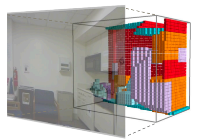
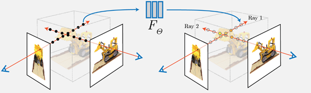
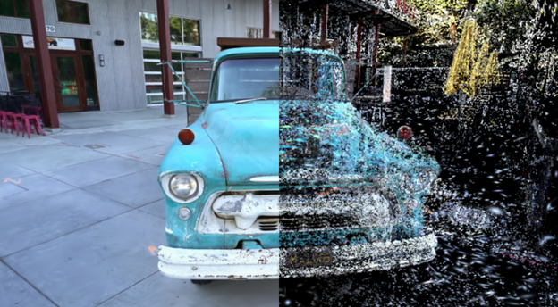

Foundation Models
This section includes discussion and learnings on foundational models (self-supervised) like DINO, DINOV2, CroCo. These models have revolutionized the field of computer vision and natural language processing by providing a strong base for various downstream tasks.
Volumetric Rendering
This section covers volumetric rendering techniques and the derivation of rendering equations. Volumetric rendering is crucial in fields like medical imaging and computer graphics for visualizing 3D scalar fields.
NERF (Neural Radiance Fields)
Here, we discuss NERF (Neural Radiance Fields) and the NDC (Normalized Device Coordinates) coordinate space. NERF has become a popular technique for synthesizing novel views of complex scenes.
Gaussian Splatting (with language)
This section explores Gaussian splatting techniques and their applications, including the innovative LangSplat approach that combines language models with 3D scene understanding.